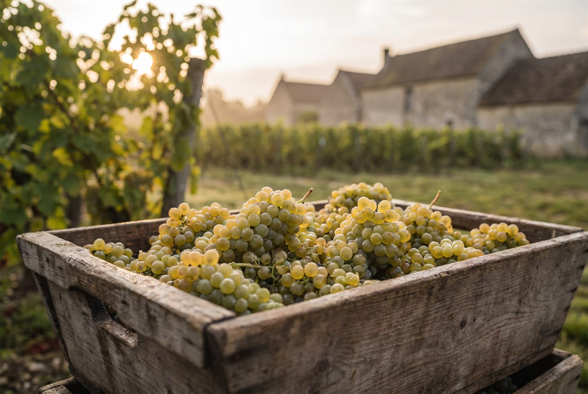

Les domaines · Côte de Beaune · Meursault
16
Meursault · Côte de Beaune
Domaine Tessier
Des meursaults de terroir, précis et équilibrés, qui privilégient la retenue à la démonstration.

Ambiance de Meursault
Installé au coeur du village de Meursault, Arnaud Tessier reprend les vignes familiales à la mort de son père et met en bouteille ses propres vins à partir de 2007, alors que le raisin était auparavant vendu au négoce. Il cultive 7,5 hectares selon les pratiques de l'agriculture biologique, sans certification, avec des rendements maîtrisés par l'ébourgeonnage. Les vins fermentent avec des levures indigènes et profitent d'un élevage long et lent.
Blancs
- Cépage · ChardonnayParcelle située dans la partie haute des Charmes, voisine de celle des Comtes Lafon.
- Cépage · ChardonnayLe domaine détient une parcelle dans les Genevrières Dessus, l'un des climats les plus réputés de Meursault.
- Cépage · ChardonnayPartie supérieure du climat Poruzot, sur le coteau de Meursault.
- Cépage · ChardonnayLieu-dit de village vinifié séparément.
- Cépage · ChardonnayLieu-dit de village vinifié séparément.
- Cépage · Chardonnay
- Cépage · ChardonnayChardonnay issu du lieu-dit Champ Perrier.
- Cépage · Chardonnay
Ces cuvées vous parlent ?
Demander les disponibilités